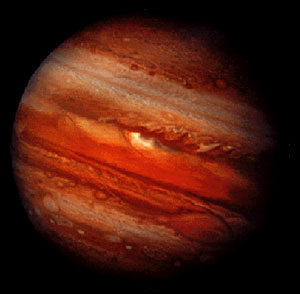

|
O Sistema Solar é constituído por oito planetas principais, são eles: Mercurio, Venus, Terra, Marte, Júpiter, Saturno, Urano e Netuno.
Júpiter é o maior planeta do Sistema Solar, tanto em diâmetro quanto em massa e é o quinto mais próximo do Sol. Possui menos de um milésimo da massa solar, contudo tem 2,5 vezes a massa de todos os outros planetas em conjunto. |
| Júpiter | |||||||||||
|---|---|---|---|---|---|---|---|---|---|---|---|
|  |
|
Fonte wikipedia